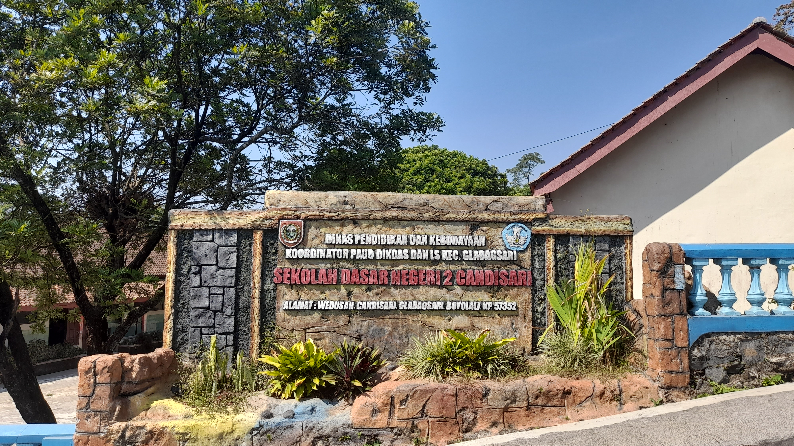
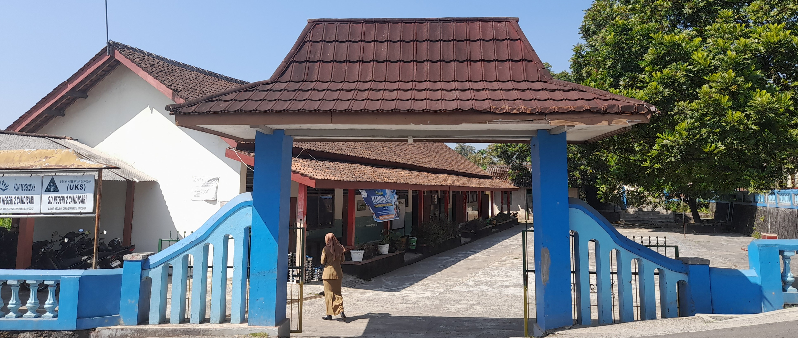
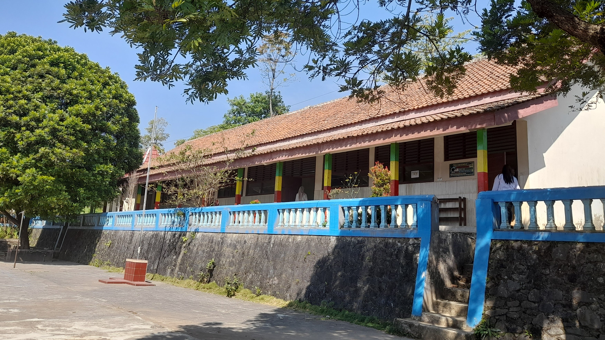
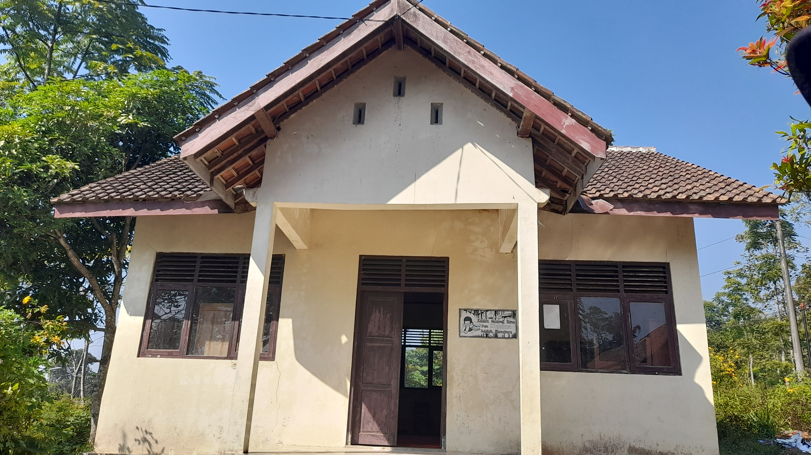
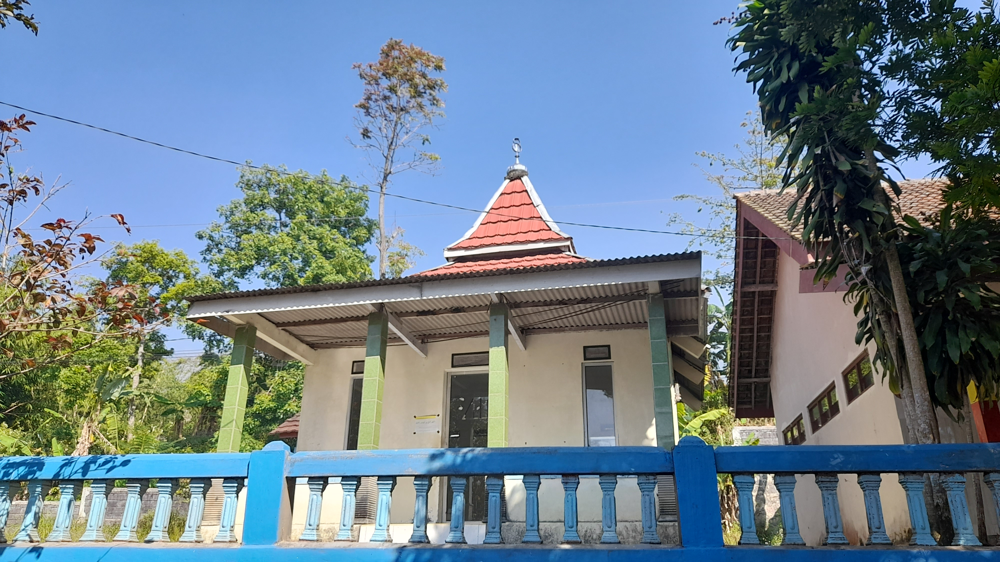
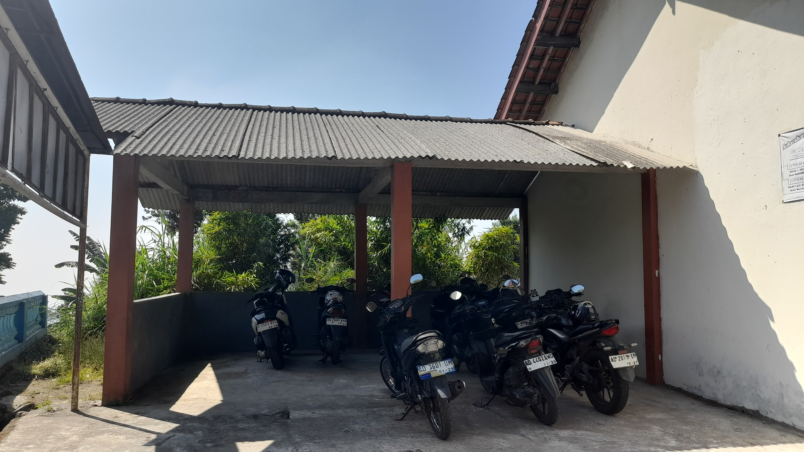
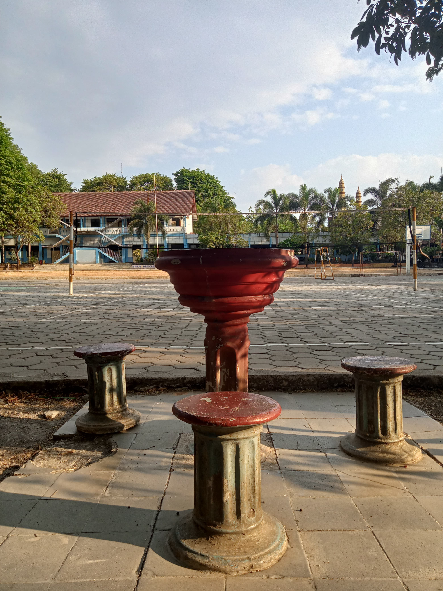
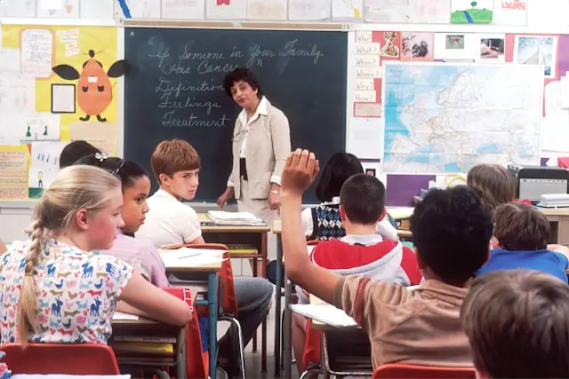

02 Mei 2026
Kegiatan Siswa
Kegiatan Siswa SD Negeri 2 Candisari
Berbagai kegiatan sekolah dilaksanakan untuk meningkatkan prestasi dan karakter siswa.
SelengkapnyaBoyolali
Mewujudkan peserta didik yang berkarakter, berprestasi, berakhlak mulia, berwawasan lingkungan dan siap menghadapi perkembangan teknologi.
Mengenal lebih dekat identitas, legalitas, serta lingkungan belajar SD Negeri 2 Candisari yang berkarakter, unggul, dan berwawasan lingkungan.

SD Negeri 2 Candisari berkomitmen mencetak peserta didik yang berkarakter, berprestasi, berakhlak mulia, berwawasan lingkungan, serta siap menghadapi perkembangan zaman.
| Nama Sekolah | : | SD Negeri 2 Candisari |
| Kepala Sekolah | : | Bapak |
| NPSN | : | 20309158 |
| Status | : | Negeri |
| Jenjang | : | Sekolah Dasar (SD) |
| Alamat | : | Wedusan, Candisari, Ampel, Boyolali, Jawa Tengah |
| Akreditasi | : | B |
| Jumlah Siswa | : | 70 Siswa (Murid) |
Pesan hangat dan komitmen pimpinan SD Negeri 2 Candisari dalam mewujudkan lingkungan pendidikan unggul dan berakhlak.

Kepala SD Negeri 2 Candisari
Bismillahirrohmanirrohim
Assalamualaikum Warahmatullahi Wabarakatuh
Alhamdulillahi robbil alamin kami panjatkan kehadirat Allah SWT, bahwasannya dengan rahmat dan karunia-Nya lah akhirnya website sekolah ini dapat kami hadirkan.
Kami mengucapkan selamat datang di Website Resmi SD Negeri 2 Candisari Boyolali yang saya tujukan untuk seluruh unsur pimpinan, guru, karyawan, siswa, dan masyarakat umum guna dapat mengakses seluruh informasi tentang profil, aktivitas, serta fasilitas sekolah kami.
Kami menyampaikan apresiasi dan terima kasih kepada tim pembuat Website yang telah berusaha untuk memperkenalkan segala potensi yang dimiliki oleh sekolah. Saran dan kritik yang membangun senantiasa kami nantikan demi kemajuan bersama.
Saya berharap Website ini dapat dijadikan wahana interaksi positif baik antar civitas akademika maupun masyarakat luas sehingga dapat menjalin silaturahmi yang erat di segala unsur.
Mari kita bekerja dan berkarya dengan mengharap ridho Sang Kuasa demi masa depan anak bangsa. Aamiin.
Wassalamualaikum Warahmatullahi Wabarakatuh
Kilas balik perjalanan, dedikasi berkelanjutan, dan komitmen dalam mencerdaskan generasi penerus bangsa di wilayah Boyolali.

SD Negeri 2 Candisari merupakan salah satu sekolah dasar yang berkomitmen dalam memberikan pendidikan berkualitas bagi peserta didik di wilayah Boyolali, Jawa Tengah. Sekolah terus berkembang dalam meningkatkan kualitas pembelajaran, fasilitas pendidikan, serta kegiatan akademik dan non-akademik untuk mendukung perkembangan potensi siswa. Seiring berjalannya waktu, SD Negeri 2 Candisari terus berusaha menciptakan lingkungan belajar yang aman, nyaman, dan mendukung pembentukan karakter peserta didik.
"Tumbuh dan berkembang bersama masyarakat untuk mencetak generasi berkarakter, berakhlak mulia, dan siap menghadapi masa depan."
Didirikan guna melayani kebutuhan pendidikan dasar anak-anak Candisari dan sekitarnya dengan semangat kebersamaan masyarakat.
Penyempurnaan berkelanjutan fasilitas ruang kelas, perpustakaan literasi, ruang ibadah, serta integrasi teknologi belajar.
Menerapkan kurikulum terkini yang menumbuhkan profil pelajar berakhlak, mandiri, berprestasi, dan sadar lingkungan hidup.
Landasan filosofis, komitmen mutu, dan arah strategis SD Negeri 2 Candisari dalam mewujudkan generasi penerus yang berkarakter, cerdas, dan berakhlak mulia.
Membina peserta didik yang taat beribadah dan berakhlak mulia.
Memiliki sikap, pengetahuan, dan keterampilan unggul di bidang akademik maupun non-akademik.
Memiliki kepedulian dan tanggung jawab nyata terhadap lingkungan alam, sosial, dan budaya.
Membentuk kesadaran iman, takwa, dan pembiasaan akhlak mulia dalam setiap aktivitas sekolah.
Membentuk jiwa dan pola pikir kreatif, inovatif, serta adaptif terhadap perkembangan teknologi digital.
Mengembangkan potensi bakat, minat, kemandirian, dan semangat pantang menyerah yang berorientasi masa depan.
Membentuk pribadi yang peka sosial, gotong royong, serta aktif melestarikan keasrian lingkungan sekolah.
Didukung fasilitas sarana dan prasarana yang lengkap, aman, dan nyaman untuk menunjang kegiatan pembelajaran akademik serta potensi non-akademik siswa.

OutdoorArea terbuka yang luas dan asri untuk upacara bendera, olahraga, serta ruang bermain siswa yang aman.
 Belajar
Belajar
Dilengkapi ventilasi udara yang baik, pencahayaan alami, serta sarana peraga belajar yang interaktif.

LiterasiKoleksi buku cerita anak, buku pelajaran kurikulum merdeka, dan ensiklopedia guna memupuk minat baca.

IbadahSarana ibadah yang bersih dan nyaman untuk pembiasaan sholat berjamaah dan pendidikan keagamaan.

SaranaArea parkir yang tertata rapi dan aman bagi guru, staf, serta orang tua/wali murid saat berkunjung.

TeknologiFasilitas penunjang pembelajaran bahasa dan literasi digital untuk kesiapan teknologi sejak dini.
 Sanitasi
Sanitasi
Kamar mandi higienis terpisah dengan air bersih mengalir untuk menjaga pola hidup bersih dan sehat.
Dididik dan dibimbing oleh dewan guru yang berpengalaman, berdedikasi tinggi, berintegritas, serta berkarakter santun.
Kepala Sekolah
Berpengalaman luas dalam kepemimpinan sekolah dasar, pengembangan kurikulum, dan pendidikan karakter islami.
 Guru Kelas
Guru Kelas
Fokus pada metode pembelajaran interaktif, kreativitas visual siswa, dan pengenalan literasi digital dasar.
 Guru Kelas
Guru Kelas
Mengampu pembelajaran tematik, penguatan logika dasar berhitung, dan pembinaan karakter budi pekerti.
 Guru Kelas
Guru Kelas
Berdedikasi dalam membimbing literasi membaca, pembiasaan disiplin, dan bimbingan belajar ramah anak.
Mendukung kegiatan pembelajaran intra-kurikuler serta pengembangan potensi minat dan bakat siswa.
Membimbing siswa dalam kegiatan akademik, keterampilan praktis, kepramukaan, dan keagamaan.
Data statistik jumlah peserta didik dan rincian rombongan belajar aktif kelas 1 sampai kelas 6 SD Negeri 2 Candisari.
SD Negeri 2 Candisari membina dan mendidik 70 murid aktif dengan lingkungan belajar yang kondusif, interaktif, dan berakhlak mulia.
Tujuan PPDB adalah untuk memastikan penerimaan peserta didik baru berjalan secara objektif, transparan, akuntabel, non diskriminatif, dan berkeadilan.
Mengisi formulir pendaftaran peserta didik baru melalui tautan Google Form resmi.
Menyerahkan fotokopi Akta Kelahiran, KK, KTP Orang Tua, dan Pas Foto 3x4 ke panitia.
Panitia memverifikasi dokumen calon siswa dan mengumumkan hasil seleksi.
Ikuti berbagai kegiatan dan informasi terbaru dari SD Negeri 2 Candisari Boyolali.
Berbagai kegiatan sekolah dilaksanakan untuk meningkatkan prestasi dan karakter siswa.
SelengkapnyaSiswa mengikuti kegiatan kreatif sebagai sarana mengembangkan bakat dan kemampuan.
Selengkapnya
25 April 2026Program literasi menjadi salah satu kegiatan rutin untuk meningkatkan minat baca siswa.
SelengkapnyaDokumentasi berbagai kegiatan akademik maupun non akademik siswa SD Negeri 2 Candisari Boyolali.